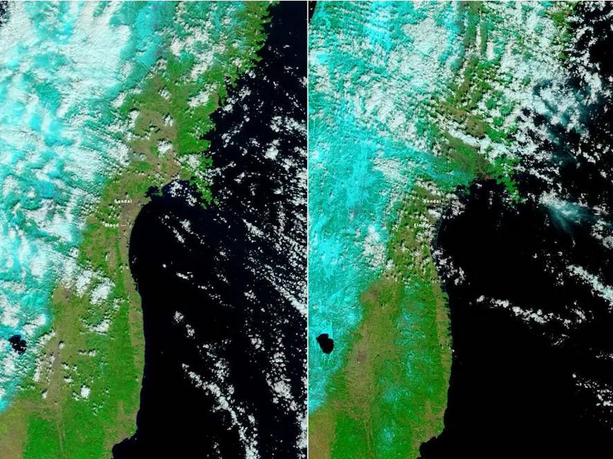
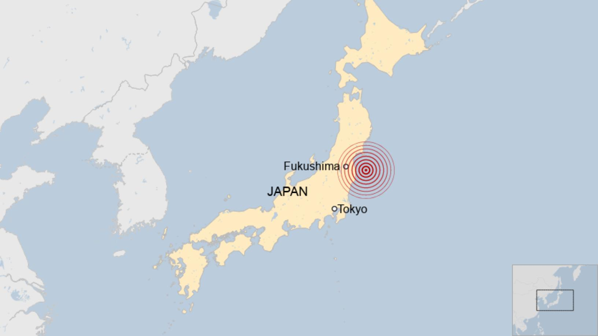
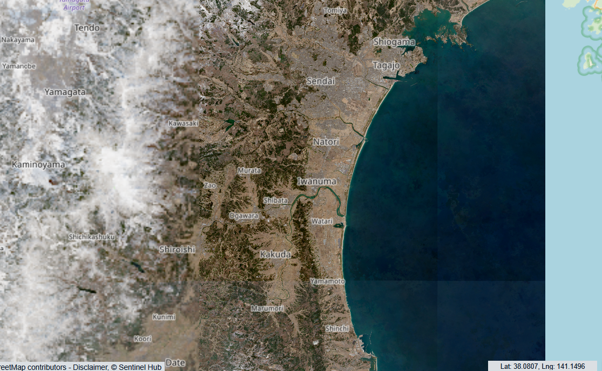

Terremoto e Tsunami Giappone 2011
Il 11 marzo 2011, il Giappone è stato colpito da un devastante terremoto di magnitudo 9.0 seguito da uno tsunami. Un evento tragico che ha avuto impatti significativi sull'ambiente, la società e l'economia globale. In questa sezione esploreremo le conseguenze e la risposta internazionale.

Le Conseguenze e Risposte
Il terremoto e lo tsunami hanno causato enormi danni. La zona di Fukushima ha visto una grave contaminazione radioattiva, mentre le coste giapponesi sono state devastate dalle onde. Tuttavia, la risposta delle autorità e della comunità internazionale è stata rapida e decisiva.
Motivazioni del disastro
Impatto Ambientale
Il disastro ha avuto impatti devastanti sugli ecosistemi locali e globali, con un'alta contaminazione marina e danni agli habitat naturali.
La Risposta Umana
Operazioni di soccorso sono state avviate rapidamente e migliaia di persone sono state evacuate. Il mondo intero ha risposto con donazioni e supporto.


Lezione di Prevenzione
Il Giappone ha migliorato significativamente i suoi sistemi di allerta terremoti e tsunami. Le autorità hanno introdotto politiche per migliorare la sicurezza delle centrali nucleari e sensibilizzare la popolazione sulla preparazione a disastri naturali.
- Sistemi di allerta avanzati.
- Educazione scolastica sui rischi naturali.
- Nuove tecnologie per la previsione dei terremoti.
Clicca qui per informazioni aggiuntive
Come Aiutare
Esistono molteplici modi in cui puoi contribuire. Puoi fare una donazione, partecipare a campagne di sensibilizzazione, o supportare organizzazioni che aiutano le vittime del disastro.
Visita siti come Croce Rossa o GlobalGiving per maggiori informazioni su come puoi aiutare.